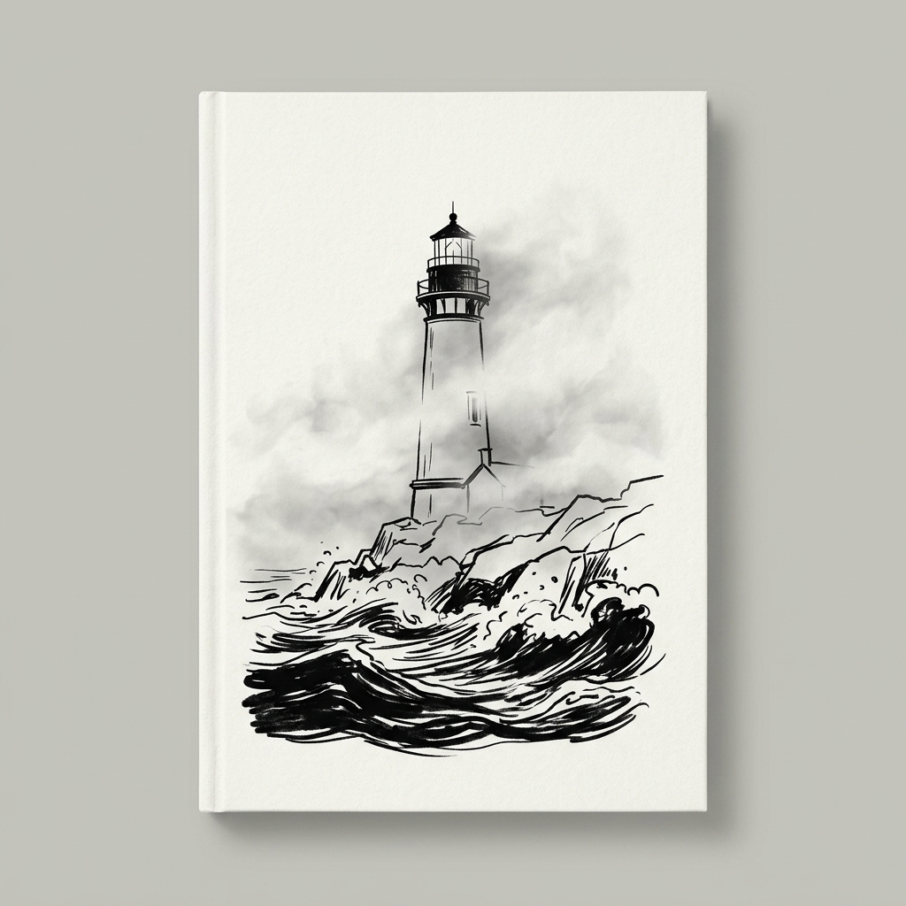
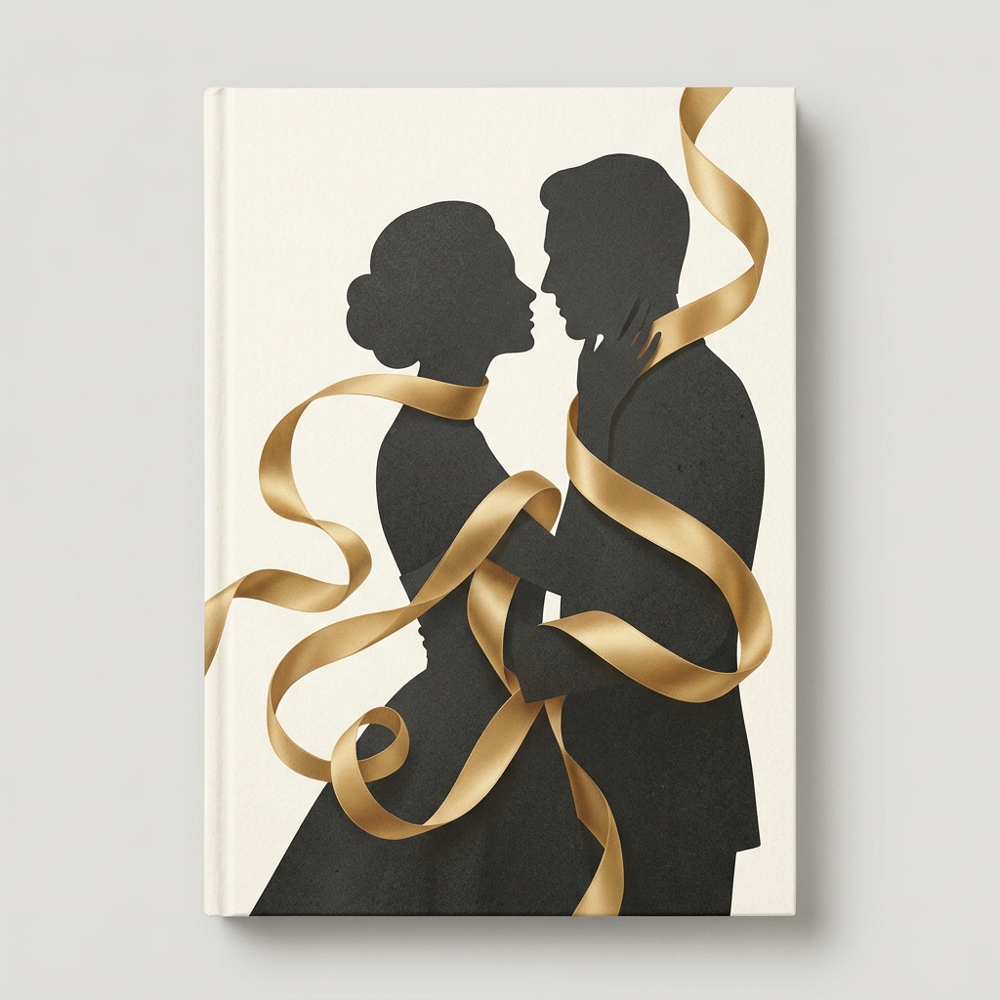
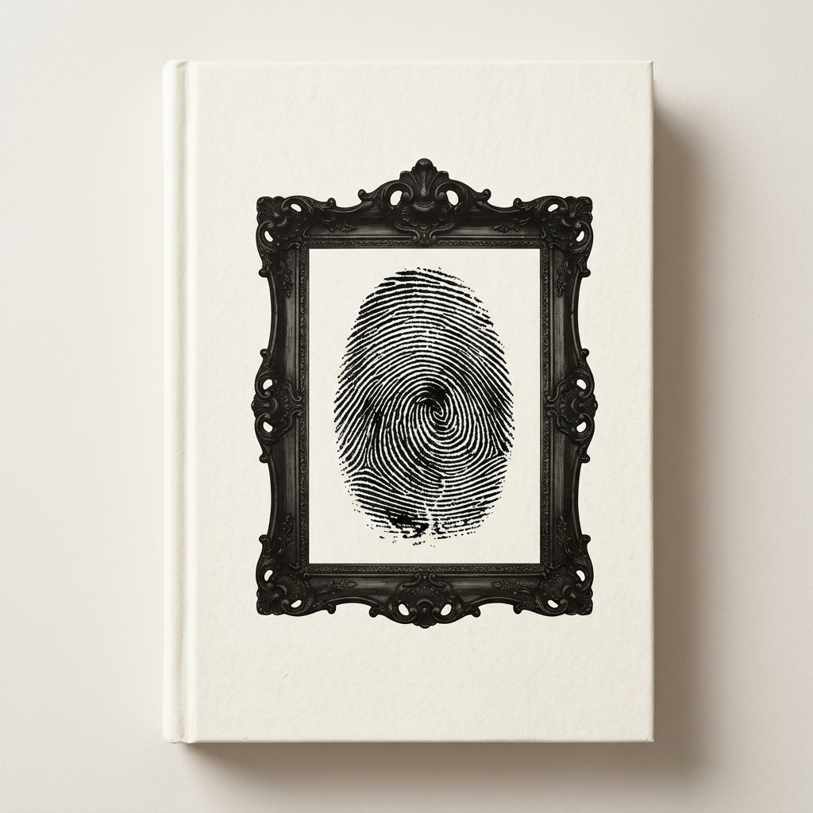

Ciencia Ficción / Thriller
El Silencio del Algoritmo
Una supercomputadora subterránea detecta un código de extinción en el ADN humano y bloquea sus sistemas para impedir la ejecución.

Terror Sobrenatural
El Guardián del Faro 44
Un farero aislado en la Roca del Centinela descubre que la luz de la torre no guía barcos, sino que mantiene sellado un abismo acuático.

Romance Erótico e Intriga
Seda y Ceniza
Una historia de pasión prohibida y lealtades secretas en la alta sociedad, donde la seducción se convierte en un juego de supervivencia.

Memorias & Crimen
Confesiones de un Falsificador
La memoria confesional de un maestro de la falsificación pictórica enfrentado a su última y más peligrosa obra maestra.